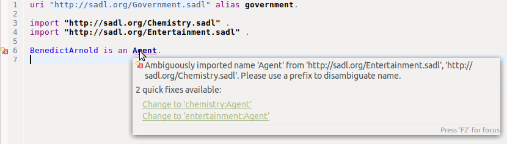

The SADL grammar does not require names to be complete URLs. In fact, it does not support complete URLs as concept names. However, it does support qualified names, also know as QNames. QNames are of the form <prefix>:<name>, e.g., owl:Class. Of course for this to be useful, there must be a unique and known mapping between the prefix and a namespace. In OWL RDF/XML syntax, this mapping is provided by a line in rdf:RDF header of the form
xmlns:owl="http://www.w3.org/2002/07/owl#".
Usually SADL models refer to concepts by their local name only, as is the case for the concepts Person and age in this statement:
George is a Person with age 25.
The model processor will look for a namespace containing the concepts Person and age, starting with the namespace of the current model and expanding the search to imported models if necessary.
However, there are two circumstances in which it is necessary to use QNames for referenced concepts.
Consider the following simple set of models.
uri "http://sadl.org/Chemistry.sadl" alias chemistry.
Agent (note "a chemically active power, principle, or substance") is a class.
uri "http://sadl.org/Entertainment.sadl" alias entertainment.
Agent (note "a business representative of an entertainer") is a class.
uri "http://sadl.org/Government.sadl" alias government.
import "http://sadl.org/Chemistry.sadl" .
import "http://sadl.org/Entertainment.sadl" .
BenedictArnold is an Agent.
Moving the
cursor over the the error:

This illustrates the first condition noted above, when a named concept is defined in multiple imports. If we intended to use either chemistry:Agent or entertainment:Agent, we could just pick the appropriate QName to replace Agent and the model would be without error.
Suppose, however, that we realize that we intend a third use of the word agent and so we wish to define a new concept. We can do this using a QName, which is the second condition above.
uri "http://sadl.org/Government.sadl" alias government.
import "http://sadl.org/Chemistry.sadl" .
import "http://sadl.org/Entertainment.sadl" .
government:Agent is a class.
BenedictArnold is an government:Agent.
Now there is no ambiguity.